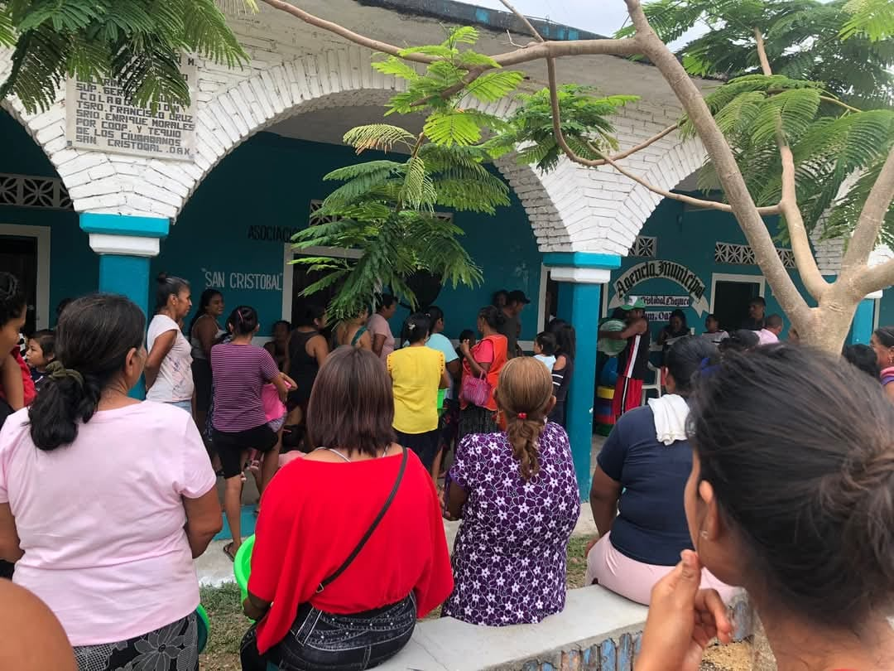

Nombre Oficial

San Cristóbal es el nombre completo de la localidad. A pesar de su importancia histórica y social, la comunidad a experimentado cambios significativos en su composición demográfica.
Historia del Nombre

●San Cristóbal: En honor a un santo cristiano conocido como el patrón de los viajeros.
●Chayuco: Palabra de origen mixteco.
Gentilicio

Los habitantes de San Cristóbal son llamados tobeños(as), por su peculiaridad que los distingen del otros pueblos circunvecinos.
Monumentos y lugares de interés

Los lugares que puedes visitar en la Comunidad de San Cristobal son:
la Iglesia, el templo principal, plaza principal en donde se llevan a cabo eventos y ferias unícas en la región Costa-Mixteca.
Cultura y tradición

●Fiesta patronal: Se celebra en honor a San Cristóbal, con misas, música y eventos tradicionales.
●Danzas y música: Se preservan bailes típicos y música regional mixteca.
●Gastronomía: Platillos típicos de la región como caldo de res, frijol.
Economía y actividades principales

●Agricultura y Ganadería: Cultivo de maíz, frijol, cria de ganado para el consumo y productos de la región.
●Artesanías: Producción de textiles y objetos tradicionales mixtecos.